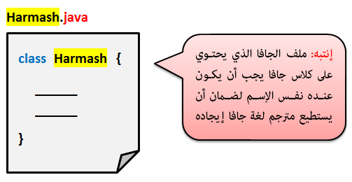
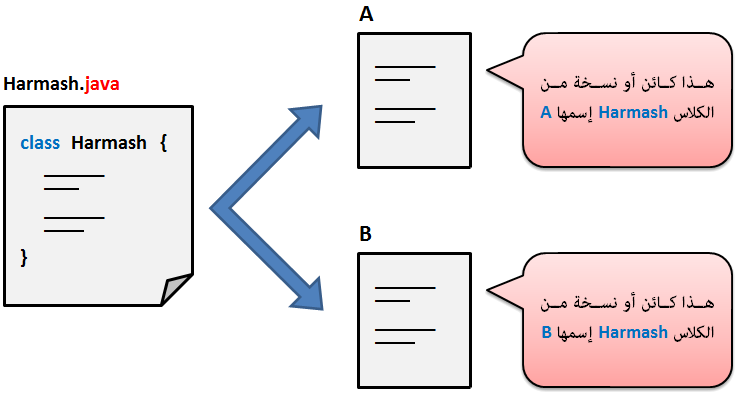
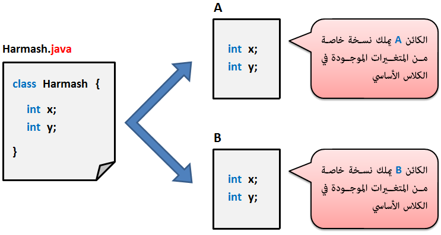

Javaأساسيات لغة جافا
بناء برنامج بلغة جافا
يمكننا تعريف أي برنامج مكتوب بلغة جافا على أنه مجموعة من الكائنات مرتبطة مع بعضها البعض بشكل منطقي و متسلسل.
في هذا الدرس سنعطيك فكرة عامة عن بعض المصطلحات الأساسية في لغة جافا مع الإشارة إلى أنك ستتعرف على كل مصطلح منهم بتفصيل في الدروس اللاحقة.
المصطلحات الأساسية في لغة جافا هي التالية.
مفهوم الكلاس
الكلاس عبارة عن حاوية كبيرة تستطيع أن تحتوي كل الكود من متغيرات و دوال و كائنات إلخ..

مفهوم الكائن
الكائن عبارة عن نسخة مطابقة لكلاس معين.
بما أن الكائن عبارة عن نسخة من الكلاس, يمكننا القول أنه لا يمكن إنشاء كائن إذا لم يكن هناك كلاس.
إذاً في مفهوم برمجة الكائنات نقوم بإنشاء كلاس معين يسمونه blue print أي (النسخة الخام أو النسخة الأصلية) , و بعدها ننشئ نسخة أو أكثر من هذا الكلاس و نفعل بها ما نريد بدون أن نغير محتويات الكلاس الأساسي و هكذا نكون حافظنا على كودات الكلاس الأساسي لأننا نعدل على النسخ و ليس عليه مباشرةً.
الفكرة الأساسية في برمجة الكائنات أنك تقوم بتقسيم البرنامج الواحد إلى عدة كلاسات, و كل كلاس يتم برمجته لتنفيذ ناحية معينة في البرنامج.
بعد الإنتهاء من كل أقسام البرنامج الموجودة في عدة كلاسات, نقوم فقط بإنشاء نسخ منهم في المكان الذي نحتاجهم فيه. و بذلك نكون جمعنا كل الكلاسات التي كتبت بشكل منفصل و ربطناهم مع بعضهم و كأننا كتبناهم في كلاس واحد فقط.

ملاحظة: الكائن هو نسخة من الكلاس و ليس نسخة من الملف الذي يحتوي على الكلاس.
كما أن الكلاس الأساسي يتم إنشائه بدون إعطاء قيم لمتغيراته و سنرى في دروس لاحقة كيف أننا نغير قيم الكائنات و ليس قيم الكلاس الأصلي مباشرةً.
لا تقلق ستفهم كل شيء في دروس لاحقة.
مفهوم الخصائص
كل كائن ننشئه من كلاس معين يملك نسخة خاصة به من المتغيرات الموجودة في هذا الكلاس. المتغيرات التي يتم إعطاء نسخة منها لكل كائن من الكلاس هي ما تسمى بالخصائص, مثال:
إذا كان عندنا كلاس إسمه Harmash يحتوي على متغيرين x و y, و أنشأنا منه كائنين, الكائن الأول إسمه A و الثاني إسمه B.
هنا سيكون كل كائن يحتوي نسخة خاصة من الأشياء الموجودة في الكلاس Harmash.
سيملك الكائن A نسخة خاصة به من المتغيرين x و y لا علاقة للكائن B فيها.
و سيملك الكائن B نسخة خاصة به من المتغيرين x و y لا علاقة للكائن A فيها.

مفهوم الدوال
الدالة ( أو الميثود ) عبارة عن كود جاهز يتنفذ فقط عندما تقوم بإستدعائه.
مثال
public void welcome()
{
System.out.print("welcome to www.harmash.com");
}
ملاحظة: في البرامج الحقيقية لا يتم تعريف جميع الدوال في الكلاس الأساسي في المشروع و الذي يسمى Main Class. بل يتم تعريفهم في كلاس ثاني أو أكثر من كلاس و عند الحاجة يتم إستدعاءهم. لا تقلق ستفهم كل شيء في دروس لاحقة.
أسلوب العمل كمبرمج في شركة أو مع مجموعة
في المشاريع الكبيرة يتم تقسيم البرنامج الواحد إلى عدة أقسام, كل مبرمج يكون مسؤول عن قسم معين في البرنامج.
الآن إليك ما يحدث, يقوم مدير المشروع بتقسيم العمل على المبرمجين, فيطلب من كل مبرمج أن ينشئ ملف جافا و ينشئ فيه كلاس و يضع فيه كوداته.
بعد إنهاء جميع أقسام البرنامج الموجودة في عدة كلاسات منفصلة - لأن كل مبرمج يعمل على ملف جافا خاص - يقوم مدير المشروع بتجميع أقسام البرنامج كلها.
كيف يفعل ذلك ؟
إنتبه: لا يقوم المدير بتعديل الملفات التي أعطاه إياها المبرمجين.
يقوم المدير بإنشاء مشروع جديد و إنشاء الكلاس الأساسي في المشروع, أي الـ Main Class.
ثم يقوم بانشاء كائنات من الكلاسات التي أنشأها المبرمجين بداخل هذا الكلاس, و هكذا يكون قد قام بجمعها كلها في مكان واحد, أي ربط جميع الكائنات مع بعضها.
إذاً مهمة المدير هي فقط ربط الكائنات و دمجها مع بعضها بالشكل الصحيح للحصول على برنامج واحد.
و في حال أراد المدير إضافة شيء ما في قسم معين من البرنامج, فإنه يطلب من المبرمج الذي كتب ذلك القسم أن يضيف عليه كود جديد.
و يستطيع المدير الوصول إلى هذا الكود الجديد من خلال الكائنات.
لا تقلق إذا لم تفهم كل شيء تم ذكره حتى الآن لأن الهدف الأساسي هو إعطاءك فكرة عامة. كما أنك ستتعلم طريقة بناء المشاريع من الصفر بعد أن تتعلم كل ما تحتاجه.

 محرر الويب
محرر الويب نظام الألوان
نظام الألوان محول الوحدات
محول الوحدات محلل عناوين الشبكات
محلل عناوين الشبكات